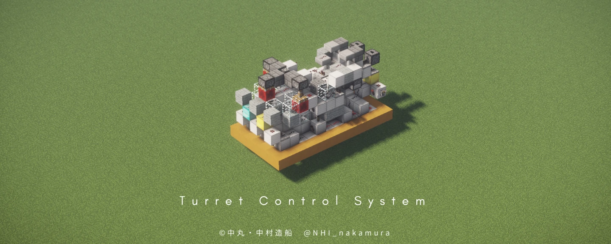

砲塔制御装置 TCS-F1
第二世代四天王プラットフォームを構成する装置
砲塔型のTNT砲を制御する。
解説
TCSとは
砲塔の真下に設置し、FCSからの信号を砲塔に送る装置です。TCSは兵装ゲート装置の一種であり、TCSからセンサー部を除いたものが固定兵装制御装置SCSです。
開発経緯
従来の第一世代四天王プラットフォーム用TCSを改良したものです。第二世代四天王プラットフォーム特有の装置ではありません。
センサー部
砲塔の指向を検出するセンサーです。
MOD等で砲塔を旋回すると、その向く方向を検出します。これにより、砲塔を方角指定で選択できます。
ゲート部
どの兵装を射撃するのかを選択する回路です。
第二世代四天王プラットフォームでは、すべての兵装へ同時に発射信号を出し、それをゲートで開通又は遮断することで各兵装を選択します。
FCSからは、発射信号と選択信号が送られ、選択信号がONなら、発射信号を開通します。
暴発防止部（BB回路）
暴発を防止する回路です。
発射信号出力中に遮断する、あるいは発射信号遮断中に開通する等すると発射信号の長さが変わり、キャノン暴発の原因になります。また、装薬追加後に発射を行わず、装薬が放置されることも暴発の原因になります。
これらを防ぐのが暴発防止回路です。